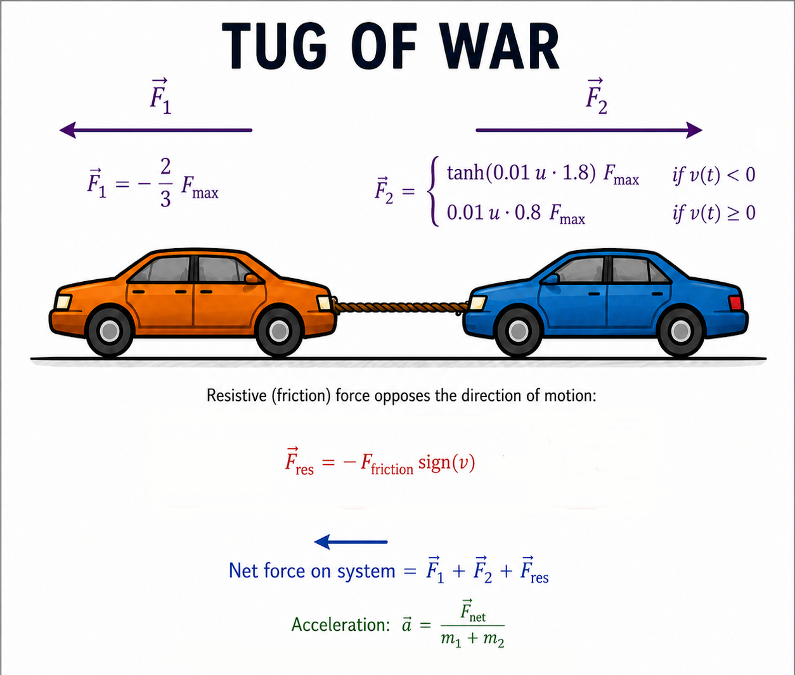
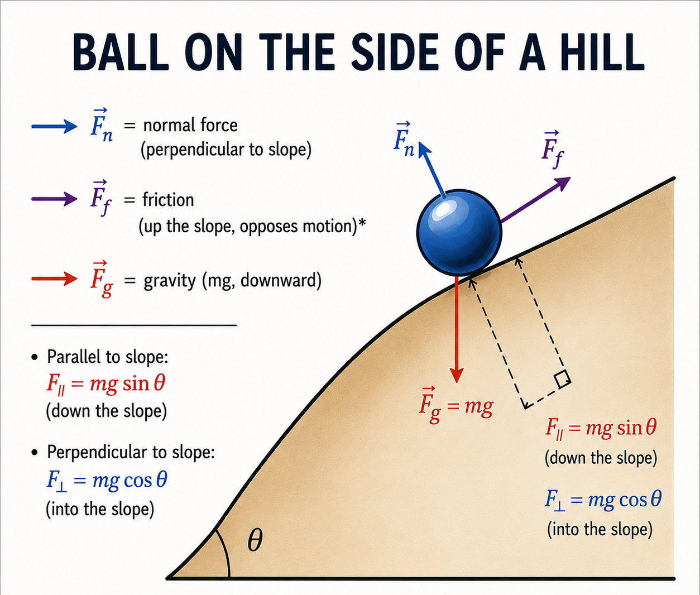

Version: (3.2) Prototype Release
Document Type: Conceptual White Paper
Author: Joakim Jacobsen
Published: September 02, 2026
Last updated: September 02, 2026
Repository: https://github.com/copenhagen-ai
Website: https://www.copenhagen-ai.com
Note: This system is experimental and subjective by design.
License: Apache License 2.0
Ethical statement: See ETHICAL


This document represents, not a complete solution, but a
progress that aims to convey an idea/vision and the framework which
arose from that idea.
Personal experience gave me the idea, that thoughts could be modelled as a dynamics guided by gravity.
Assuming that thoughts have an index from which mass, force
etc., can be deduced. Gravity then pulls towards heavy thoughts.
We see this when dealing with trauma and talk daily about heavy thoughts.
These ideas have led to a highly autonomous agent, which can be used for controlling other AI systems.
The Awesome.AI framework proposes a new approach to simulate
dynamics of the mind, using concepts borrowed from classical and modern
physics.
It aims to:
Awesome(.) structures the stochastic, disorganized states of UNIT and HUB space into stable patterns.
UNIT: an abstract multi-purpose candidate, decision, action, or thought that the system evaluates at each step.
HUB: the contextual state associated with each UNIT, providing the context necessary for evaluation.
The state evolves over time through repeated updates influenced by selected UNITs.
One can think of HUBs as the context/problems and UNITs as answers/solutions.
A UNIT is a single representation of a thought.
interface Unit {
guid: string; // unit id
base_index: register; // register with named properties corresponding to axes in UNITspace, range 0.0 to 100.0
hub_index: number; // Value between 0.0 and 100.0 on an axis in HUB-space
data: string; // Static/chosen or Generated (LLM) according to unit_index and hub_index (HUB subject)
credit: number; // Score between 0.0 and 10.0
ticket: string; // Used for matching UNIT with external object
}
interface HubSpace {
get_index: number;
get_subject: string; // (e.g., "work", "having fun", "friends")
get_units: Units[];
}
HUBspace is a set of local spaces selected by Occupation*.
These local spaces contain HUBs/subjects, like: "work", "having fun", "friends".
Subjects can overlap under multiple Occupations*.
Select Subject
Let:
- H = {h1, h2, ..., h_n}
- H_occ ⊆ H
- u.hub_index ∈ [0,100]
Each HUB has a weight:
- w_i ∈ [0,1]
Sum weight:
- W = ∑_{i ∈ H_occ} w_i
Each HUB is assigned a normalized area:
- a_i = (w_i / W) * 100
- ∑_i a_i = 100
Cumulative areas:
- A_k = ∑_{i=1..k} a_i
Such that the assigned HUB (h_k) satisfies:
- h_k ∈ H_occ such that A_{k-1} ≤ u.hub_index < A_k
Thereby tying a HUB/subject to a UNIT or grouping UNITs under a HUB.
Update:
Let UNIT i have named indexesAwesome.AI models thought as discrete UNITs—atomic cognitive elements—each anchored to a coordinate in a continuous "UNITspace". This embedding enables the system to apply Newtonian-style dynamics (forces, velocity, acceleration) to the simulation over time. The physics operates in continuous space, while discrete UNITs act as semantic attractors that the trajectory can settle on.
The mechanics are metaphors for the dynamics of the mind.
These are tested to be working, others may exist.
Here will be described some of the mechanics found.
The main reason for the mechanics is to create noise/randomness, which will be mapped to processes of the mind.
These can be extended to other physics domains, such as thermal systems, electrical systems etc.
Definitions:
Formula:
Friction
Randomness (by ChatGPT)
Resetting the Mechanics (by ChatGPT)
These are not exact mappings, but should be taken as descriptive.
| Parameter | Base-Prop |
|---|---|
| velocity | Will (by author) |
| delta velocity | Conflict |
| momentum | Commitment |
| acceleration | Adaptation |
| kinetic energy | Activation |
| force (net) | Influence |
Mech One, Tug Of War
Mech Two, Ball On Hill
Pseudocode, see Appendix B
the main filters are:
Credit Filter
note: probability could be used for selection method, but omitted for simplicity
After applying filters, the current UNIT is selected by:
Initially UNITs are scattered randomly across UNIT-space.
While selecting current UNIT, the state of UNIT-space is also updated.
base_index[prop] += MyRandomDouble * ETA * direction_vector : for each prop in base_indexReward is updated for all UNITs once per cycle, by:
for each unit
if current UNIT then
reward_i = DECAY * reward_i + 1.0
else
reward_i = DECAY * reward_i
A UNIT is removed if reward_norm_i < EPSILON
Update Index-- GAMMAeff_i = GAMMA * (1.0 + reward_norm_i)-- UNIT.hub_index ±= GAMMAeff_i-- weight += GAMMAeff_i * 0.1-- weight -= GAMMAeff_i * 0.01Pseudocode, see Appendix D
Pseudocode, see Appendix F
a. Besides Base-Props the mechanic produces Mod-Props, these are Base-Prop + variations.
b. Mod-Props can be used for simulating: brainwave properties, communication properties, temperament properties etc.
c. Base-Props are the mappings of the DE.
d. Base-Props are in reference to an axis in UNITspace.
e. Mod-Props remain calculated.
f. Base-Props and Mod-Props are connectors for controlling other AI systems.
| Mode | Description |
|---|---|
| One Agent | Uses delta velocity to calculate a probability for flipping Down (changing direction by multiplying by -1). |
| Multi Agents (Social Coupling) | When in proximity of other agents, a shared delta velocity is used to calculate a probability, then flips awesomeagent.Down and simpleagent.Down accordingly (changing direction by multiplying by -1). |
This operator models subconscious awareness between agents. Inspired by how humans react to subtle cues like micro-expressions or body language, an agent's directional update can be influenced by another agent's state. When agents become aware of each other, their updates are no longer independent. Instead, they exhibit shared coupling, leading to alignment, divergence, or sudden shifts in direction. The strength of this effect is controlled by an awareness parameter. This is a simple way to simulate emergent social resonance through correlated behavior.
Controlled Inconsistency (by ChatGPT):Some aspects of the system deliberately introduce what might appear as inconsistencies. For example, the DOWN state evolves independently of UNIT selection, allowing the system to assign directional outcomes that are not strictly derivable from its chosen thought. This controlled inconsistency is intentional: it enables richer dynamics, models cognitive contradictions, allows for external or subconscious influence, and creates an illusion of agency.
The system operates a self-modifying feedback loop globally.
Feedback LoopProcess Overview:
// this pseudocode is conceptual
Initialize system state
For i = 1 to N:
Apply Mechanics
Update Down and Mod-Props
Apply filters (credit, lowcut)
Find current UNIT
Update UNIT-space (global feedback)
Return most frequently selected UNIT
Repeat From TopThere are distinctions between the two.
Index:Reciprocal(position) or EventHorizon(position).INFO: the system produces a MyRandom, which is used for this feature.
What has been described so far is the core of the framework. The core is focused on a fixed UNITspace, but with occupation (-of the mind), UNITspace is divided into portions of valid UNITs, thereby letting the system have trains of thought.
Occupation defines a named mental activity with a list of HUBs:interface Occupation {
name: string; // what is the system's current occupation
max_epochs: number; // a number indicating how many epochs (max) is spend on this Occupation
hubs: Hub[]; // a list of HUBs associated with this Occupation
}MyRandom to pick a number below max_epochsMyRandom to pick a Occupationto be valid in UNITspace, a simple tag/ticket matching feature has been implemented.
The monologue has two modes. The default is deterministic.
In a live system, the two sentences should be created by an LLM.
These are some ways decisions are made within the system:
LONGDECISION or QUICKDECISION UNITs.QUICKDECISIONACTION, DECLINE, (NOACTION), based on average (trend) UNIT index These should be seen as thought experiments.
Parts needed:
These are some use cases:
("→" means controls)
note: EnvironmentSystem could take MyRandomDouble as input for generating state data
note:This makes Awesome.AI a cognitive control layer that can be designed or learned, and delegates execution to existing AI systems.
These are some limitations:
Further development:
The biggest problem is..
Inspired By - Reference Guide (by ChatGPT)
Plato (The Cave)
Key idea: Reality is filtered; we only see shadows.
Connection: UNITs evolve in an internal simulation,
representing an internal "shadow world" of thought possibilities.
Descartes (Idea World / Cogito)
Key idea: Structured reasoning can exist independently of the physical world.
Connection: UNIT-space models a self-contained idea-space where thoughts unfold according to internal rules.
Simulation Hypothesis (Bostrom / Modern Thought)
Key idea: Complex reality can emerge from computation.
Connection: Justifies a fully self-contained thought simulation, where internal dynamics alone drive outcomes.
Spinoza (Illusion of Free Will)
Key Idea: Freedom is an illusion; all actions follow natural causes.
Connection: Heavy UNITs/thoughts are filtered by the LowCut
filter, creating the appearance of choice while the system remains
unaware of the underlying mechanics.
Jean-Paul Sartre (Existential Freedom)
Key idea: Freedom includes the ability to refuse - to say "no".
Connection: The Down mechanism represents rejection of direction - to negate trajectory rather than continue it.
Newton (Classical Mechanics)
Key idea: Objects move under forces with velocity and predictable dynamics.
Connection: Velocity-driven mechanics provide the metaphor for how thoughts evolve and interact internally.
Yin–Yang
Key idea: Opposing forces maintain dynamic equilibrium.
Connection: Push–pull interactions and oscillatory dynamics in the simulation reflect balanced internal tension.
Psychology / Cognitive Patterns
Key idea: Thought dynamics can reflect diverse cognitive states.
Connection: Social Coupling simulates complex, unpredictable
patterns reminiscent of cognitive variability observed in psychology.
| Term | Description |
|---|---|
| UNIT | Individual data node representing a thought or decision |
| HUB | Persistent container grouping UNITs by theme or problem space |
| Mech Stochastic | Core mechanic producing oscillating dynamics (soul/will) |
| Delta Velocity | Change in system movement that guides directional transitions |
| LowCut | Filter removing most "massive" thoughts temporarily |
| Credit | A decay-based score regulating UNIT reuse |
| Will-Prop | Value representing direction, in the range -1 to 1 |
| Base-Prop | Value derived by the mechanics; guides Mod-Props |
| Mod-Props | Variations of Base-Props, defined by modifiers and an update matrix |
| UNIT-space | Abstract "space" where UNITs exist and interact. Defines relational geometry rather than storing data |
| Cycle | One internal update step where UNITs exchange forces and update states |
| Epoch | A group of cycles representing one full reasoning phase before evaluation |
function UpdateCredit():
if mind.z_current ≠ "z_noise":
return
if not UNIT.OK(mind.unit_current):
return
list ← mind.mem.units_all()
for each u in list:
if not UNIT.OK(u):
continue
if u.root = mind.unit_current.root:
continue
cred ← CONST.UPD_CREDIT
u.credits ← u.credits + cred
if u.credits > CONST.MAX_CREDIT:
u.credits ← CONST.MAX_CREDIT
mind.unit_current.credits ← mind.unit_current.credits - 1.0
if mind.unit_current.credits < CONST.LOW_CREDIT:
mind.unit_current.credits ← CONST.LOW_CREDIT
struct MyModifiers:
function Mod_A(value, prop):
base ← -0.05
if prop = "opinion": # stronger damping for opinion
base ← base * 2.0
if prop = "temporality": # stronger damping for temporality
base ← base * 2.0
return base * value
function Mod_B(value, prop):
base ← -0.5
if prop = "opinion": # stronger damping for opinion
base ← 1.0
if prop = "temporality": # stronger damping for temporality
base ← base * 1.5
return base * value
function Run(value, prop):
value ← Mod_A(value, prop)
value ← Mod_B(value, prop)
return value
struct MyMatrix:
data ← dictionary<(string, string), double>()
function get(key1, key2):
if (key1, key2) in data:
return data[(key1, key2)]
return 1.0
function set(key1, key2, value):
data[(key1, key2)] ← value
function Run(val, key2):
res ← 1.0
for each entry in data:
key1 ← entry.key.item1
res ← res * get(key1, key2)
return val * res
function Continuous(prop):
agent ← SimpleAgent(mind)
d_curr ← mind.mech_current.mp.d_curr
d_norm ← mind.mech_current.mp.d_100
d_save ← mind.mech_current.mp.d_100
down1 ← (d_curr ≤ 0.0)
down2 ← (agent.simulate_direction() ≤ 0.0)
d_norm ← mind.calc.normalize(d_norm, 0.0, 100.0, -1.0, 1.0)
d_save ← mind.calc.normalize(d_save, 0.0, 100.0, -1.0, 1.0)
if CONST.Logic = LOGICTYPE.CLASSICAL:
throw "Down, Continuous"
if CONST.Logic = LOGICTYPE.PROBABILITY AND down1.probability(mind):
d_norm ← d_norm * -1.0
if CONST.Logic = LOGICTYPE.QUBIT AND down1.qubit(down2, mind):
d_norm ← d_norm * -1.0
if prop = "noise":
SetError(d_save ≠ d_norm)
d_norm ← Mods.run(d_norm, prop)
d_norm ← Matrix.run(prop)
SetProp(d_norm)